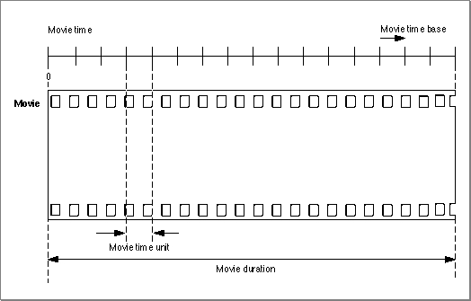
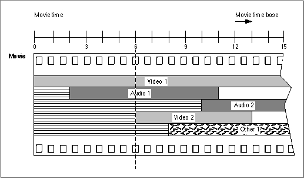
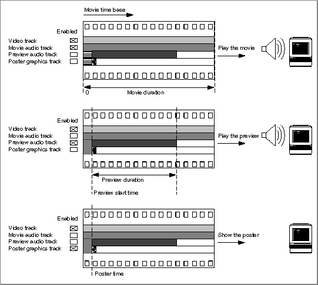

Movies
QuickTime movies have a time dimension defined by a time scale and a duration, which are specified by a time coordinate system. Figure 2-3 illustrates a movie's time coordinate system. A movie always starts at time 0. The time scale defines the unit of measure for the movie's time values. The duration specifies how long the movie lasts.Figure 2-3 A movie's time coordinate system

A movie can contain one or more tracks. Each track refers to media data that can be interpreted within the movie's time coordinate system. Each track begins at the beginning of the movie. However, a track can end at any time. In addition, the actual data in the track may be offset from the beginning of the movie. Tracks with data that does not commence at the beginning of a movie contain empty space that precedes the track data.
At any given point in time, one or more tracks may or may not be enabled.
However, no single track needs to be enabled during the entire movie. As you move through a movie, you gain access to the data that is described by each of the enabled tracks. Figure 2-4 shows a movie that contains five tracks. The lighter shading in
- Note
- Throughout this book and its companion, Inside Macintosh: QuickTime Components, the term enabled track denotes a track that may become activated if the movie time intersects the track. An enabled track refers to a media that in turn refers to media data.
each track represents the time offset between the beginning of the movie and the start of the track's data (this lighter shading corresponds to empty space at the beginning of these tracks). When the movie's time value is 6, there are three enabled tracks: Video 1 and Audio 1, and Video 2, which is just being enabled. The Other 1 track does not become enabled until the time value reaches 8. The Audio 2 track becomes enabled at time value 10.A movie can contain one or more layers. Each layer contains one or more tracks that may be related to one another. The Movie Toolbox builds up a movie's visual representation layer by layer. For example, in Figure 2-4, if the images contained in the Video 1 and Video 2 tracks overlap spatially, the user sees the image that is stored in the front layer. You assign individual tracks to movie layers using Movie Toolbox functions that are described in "Working With Movie Spatial Characteristics" beginning on page 2-143.
Figure 2-4 A movie containing several tracks

The Movie Toolbox allows you to define both a movie preview and a movie poster for a QuickTime movie. A movie preview is a short dynamic representation of a movie. Movie previews typically last no more than 3 to 5 seconds, and they should give the user some idea of what the movie contains. (An example of a movie preview is a narrative track.) You define a movie preview by specifying its start time, its duration, and
its tracks. A movie may contain tracks that are used only in its preview.A movie poster is a single visual image representing the movie. You specify a poster as a point in time in the movie. As with the movie itself and the movie preview, you define which tracks are enabled in the movie poster.
Figure 2-5 shows an example of a movie's tracks. The video track is used for the movie, the preview, and the poster. The movie audio track is used only for the movie. The preview audio track is used only for the preview. The poster graphic track is used only for the poster.
Figure 2-5 A movie, its preview, and its poster
